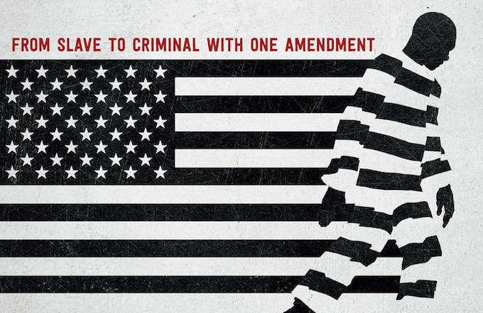

Citizens Against Recidivism
A PROJECT TO END NEO-SLAVERY AND HYPERINCARCERATION IN THE UNITED STATES
There are a myriad of avenues in which one can go forward in volunteering and creating social change. I have had the opportunity to volunteer for an organization that is rooted in justice. Citizens Against Recidivism, Inc. works to attain the restoration of all the fundamental rights of citizenship among people in prison or jail. Founded in 1992, its initial goal was to provide supportive counseling to address the needs of the family members of those incarcerated. Now, this organization has become a sanction of guidance and relief for those imprisoned and those who have been released, in collaboration with other communities and faith based organizations in the overlapping steps of the community reintegration process. This nonprofit organization also drives to raise awareness for the 13th amendment in efforts to overturn this clause.
Page